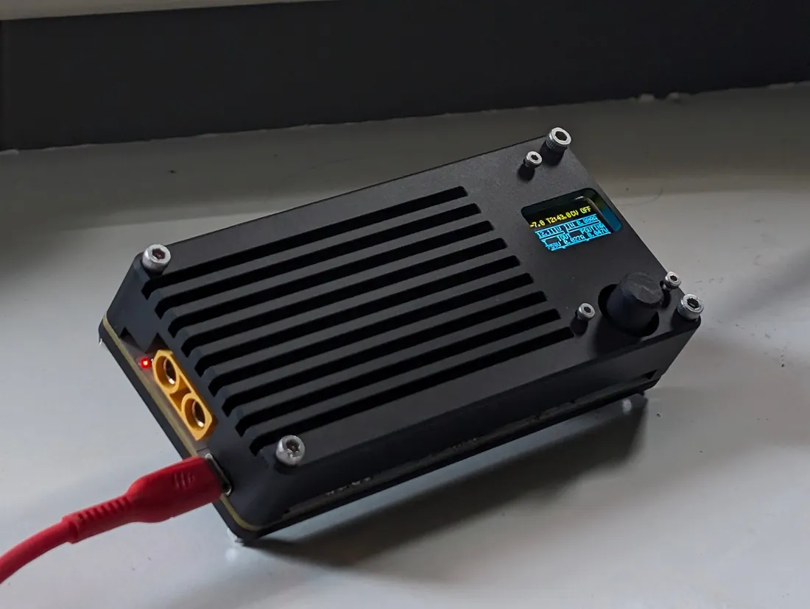

Work 03 Power supply
240 W
in a pocket.
A USB-C PD 3.2 buck/boost supply with a 0–60 V output and up to 240 W. The STM32 negotiates the input rail to keep the converter in an efficient operating region; the second revision reached 94.8 % measured peak efficiency.

01The brief
The goal was a portable programmable supply in the spirit of the Miniware MDP-XP, with a wider output range and an emphasis on power density. It accepts USB-C Power Delivery or higher-voltage DC input and provides 0–60 V at up to 20 A through an XT90 connector.
Switching at 1 MHz reduces the size of the magnetics and capacitors. The EPC GaN devices help keep the associated losses low enough for a compact enclosure.
02Specification
| Input | 12–48 V — USB-C PD or XT90 |
|---|---|
| Output | 0–60 V, 20 A, 240 W |
| Topology | Non-inverting buck/boost, LT8390A |
| Switching | 1 MHz |
| Power FETs | EPC2367 eGaN |
| Power monitor | INA228, 16-bit, I²C |
| MCU | STM32G474CEUx |
| Display | SSD1306 0.96″ OLED, 3-button UI |
| PD | Fixed PDO · PPS 5–21 V · AVS/EPR 15–48 V |
| Peak efficiency | 94.8 % at 36 V in → 52.4 V, 219 W out |
| Peak input power | 240.8 W at 14 V in, 90.2 % |
03Tracking the input rail
A four-switch buck/boost is generally less efficient when both bridges are switching. Instead of accepting any available charger voltage, the STM32 requests a PD rail based on the desired output, keeping the LT8390A in a cleaner buck or boost region where possible.
The input supports fixed PDOs, PPS and AVS/EPR up to 48 V. This links the USB-C negotiation directly to the efficiency of the power stage, rather than treating it as a separate feature.
04Bench results
The first revision reached 164 W in one test at 94.1 %. With a 2.2 µH Coilcraft XAL1010 inductor, revision 2 reached 219 W at 94.8 % peak efficiency, with a highest measured input of 240.8 W. Testing used a Riden RD6024 supply and an EA-EL 3160-60 load.
The repository includes the full test tables and equipment list for both revisions, making the effect of the component change easy to see.
05Thermal
A FreeCAD thermal model estimated an enclosure temperature of about 38 °C with a fan when 10 W was applied to the heatsink. On the bench, the GaN devices stayed around 60 °C, while the inductor core reached about 90 °C. That makes the inductor the main thermal constraint in the current revision.
06The rest of it
An STM32G474 runs the bare-metal UI on a 0.96″ OLED with three buttons, reads an INA228 for input and output power, and shows real-time efficiency. The power stage is EPC2367 eGaN with an LT8390A controller, following the EVAL-LT8390A topology. USB-C PD input stage based on the open-source PD240W design.

